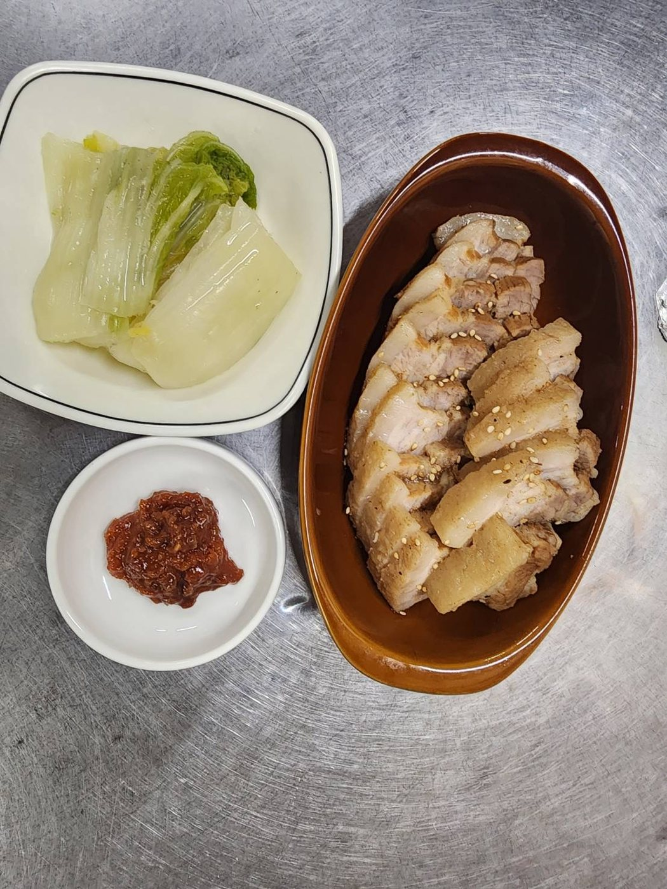
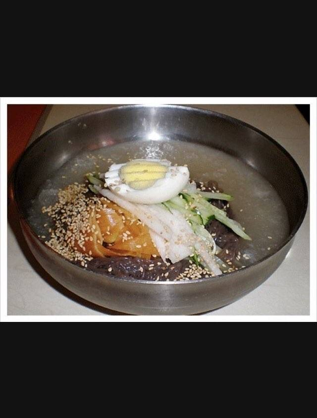

スンドゥブチゲ 순두부찌개
¥1200純豆腐チゲに卵を落として。辛口は ¥1500。
純豆腐チゲに卵を落として。辛口は ¥1500。

熟成キムチと豚肉の、こっくり辛旨。
韓国味噌のやさしい鍋。豆腐と野菜たっぷり。
豚の背骨とじゃがいもを煮込んだ、旨辛の鍋。

ソーセージや餅、ラーメンも入る賑やかな鍋。
熟成キムチと豚肉を、じっくり蒸し煮に。

鶏を丸ごと煮込んだ、滋養の白いスープ。
牛肉と野菜をたっぷり、ピリ辛の旨味スープ。

豚バラを鉄板でこんがりと。2人前より承ります（1名様のご来店は1人前可）。サンチュセット ¥500。

茹でた豚バラを、白菜やサムジャンと巻いて。要予約。
じっくり煮込んだ、とろりと柔らかな豚足。
こりこりの砂肝を、香ばしくピリ辛に。
豚肉と野菜を甘辛く炒めた、ごはんの進む一皿。
たこと野菜を、韓国唐辛子で旨辛に炒めて。
鶏肉とじゃがいもを、コクのある旨辛だれで。
熱々の石鍋で。おこげまで香ばしい。
彩り野菜とごはんを、よく混ぜて召し上がれ。

黒味噌の甘辛だれをからめた、韓国式の麺。

つるりと冷たい、さっぱり韓国冷麺。
甘辛だれをよく混ぜて。コシのある冷麺。
ごはん single。

魚介とニラをたっぷり。外はカリッ、中はもっちり。

もちもちの餅を、甘辛ソースで。
とろけるチーズをたっぷりのせて。
ふんわり巻いた、韓国式の卵焼き。
ふるふる熱々の、韓国式茶碗蒸し。

季節の野菜を数種、小鉢で。
温奴に、炒めキムチと豚肉を添えて。
やさしい味の、豆腐入りサラダ。
春雨と野菜を甘辛く。彩り豊かな一品。
白菜キムチ・カクテキなど。
ごはんにも、お酒にも合う塩辛。
香ばしい韓国のり。
ランチ 〜2,000円／ディナー 〜3,000円。お支払いは現金・PayPayに対応しています。お品書き・価格は仕入れや季節により変わる場合があります。